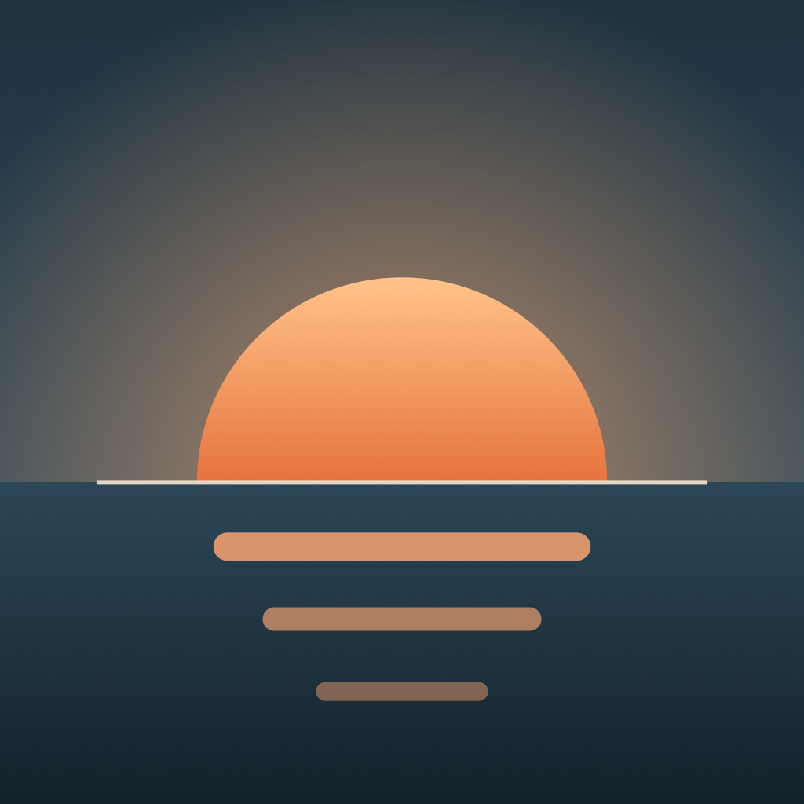

Reheart is a 30-day program to steady yourself after a breakup: one small task a day, an honest test to help you decide whether going back is worth it, and an SOS button for the moment you want to write to your ex. It has no account, no ads, no subscription and no artificial intelligence. Everything stays on your iPhone.
Is Reheart therapy? No. It is a self-help companion. It does not diagnose or treat anything, it does not replace a professional, and it makes no promises about your relationship or your wellbeing. If you feel unsafe, hopeless or in crisis, contact a professional or your local emergency number.
Will it help me get my ex back? No. It helps you steady yourself and decide with a clear head. The test can recommend going back, moving on or giving it time, and it will advise against going back if your answers describe fear, control, humiliation or threats. If someone asked you not to contact them, the app asks you to respect that.
What is free and what does the one-time purchase unlock? Free: the SOS button, the full test with a summary result, the safety result and help lines, the day-by-day counter, the diary (you can write without limit and see the latest entries) and days 1 to 3. The one-time purchase (US$9.99, price varies by country) unlocks days 4 to 30, the detailed test result with the days to repeat, the complete diary with mood chart and SOS pattern, and PDF export. It is not a subscription.
How do I restore my purchase? Settings > Restore purchase, or on the purchase screen. Use the same Apple ID you bought with.
Where are help lines from? From official sources, with the source and the date checked listed in the app's repository documentation. Numbers can change; if your country is not listed, the app tells you to use your local emergency number and links to international directories.
Where is my data? Only on your iPhone, in the app's private storage. There is no account and no server. If you delete the app or use "Delete all my data", it is gone.
Reminders and the lock. The optional daily reminder only says that today's task is waiting. The optional lock uses Face ID or your passcode through iOS.
Languages. The app and its content are available in 20 languages. Translations have not been reviewed by native speakers; please write if you find something to improve.
Reheart es un programa de 30 días para recuperar la estabilidad tras una ruptura: una tarea pequeña al día, un test honesto para decidir si merece la pena volver y un botón SOS para el momento en que quieres escribir a tu ex. Sin cuenta, sin anuncios, sin suscripción y sin inteligencia artificial. Todo se queda en tu iPhone.
¿Es terapia? No. Es un acompañamiento de autoayuda: no diagnostica ni trata nada, no sustituye a un profesional y no promete nada sobre tu relación ni tu bienestar. Si te sientes en peligro, sin esperanza o en crisis, contacta con un profesional o con el número de emergencias de tu país.
¿Me ayudará a recuperar a mi ex? No. Te ayuda a estabilizarte y a decidir con la cabeza fría. El test puede recomendar volver con condiciones, darte tiempo o seguir adelante, y desaconseja volver si tus respuestas describen miedo, control, humillación o amenazas. Si alguien te pidió que no le contactes, la app te pide que lo respetes.
¿Qué es gratis y qué desbloquea la compra única? Gratis: el botón SOS, el test completo con resultado resumido, el resultado de seguridad y los teléfonos de ayuda, el contador, el diario (escribir sin límite y ver las últimas entradas) y los días 1 a 3. La compra única (9,99 US$, el precio varía según el país) desbloquea los días 4 a 30, el resultado detallado del test, el diario completo con gráfico y la exportación en PDF. No es una suscripción.
¿Cómo restauro la compra? Ajustes > Restaurar compra, o en la pantalla de compra, con el mismo ID de Apple.
¿Dónde están mis datos? Solo en tu iPhone. No hay cuenta ni servidor. Si borras la app o usas «Borrar todos mis datos», desaparecen.
Contacto: jmillacatalan@gmail.com
Last updated / Última actualización: 25 November 2026 / 25 de noviembre de 2026. Developer / Desarrollador: Jordi Milla Catalan. Contact / Contacto: jmillacatalan@gmail.com